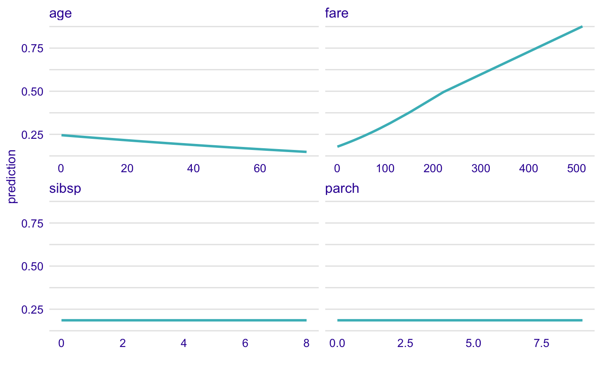
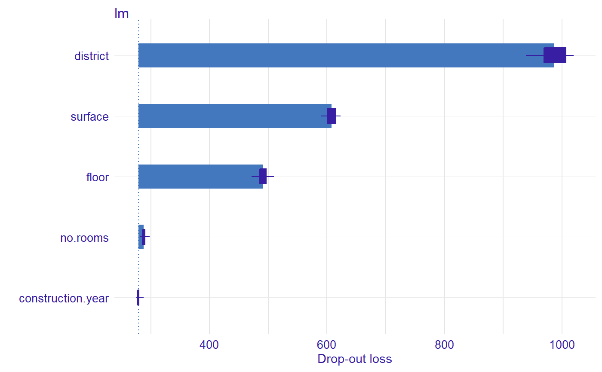

Natural language description of feature importance explainer
Source:R/describe_aggregated_profiles.R, R/describe_ceteris_paribus.R, R/describe_feature_importance.R
describe.RdGeneric function describe generates a natural language
description of ceteris_paribus(), aggregated_profiles() and
feature_importance() explanations what enchaces their interpretability.
# S3 method for partial_dependency_explainer describe(x, nonsignificance_treshold = 0.15, ..., display_values = FALSE, display_numbers = FALSE, variables = NULL, label = "prediction") describe(x, ...) # S3 method for ceteris_paribus_explainer describe(x, nonsignificance_treshold = 0.15, ..., display_values = FALSE, display_numbers = FALSE, variables = NULL, label = "prediction") # S3 method for feature_importance_explainer describe(x, nonsignificance_treshold = 0.15, ...)
Arguments
| x | a ceteris paribus explanation produced with function `ceteris_paribus()` |
|---|---|
| nonsignificance_treshold | a parameter specifying a treshold for variable importance |
| ... | other arguments |
| display_values | allows for displaying variable values |
| display_numbers | allows for displaying numerical values |
| variables | a character of a single variable name to be described |
| label | label for model's prediction |
Details
Function describe.ceteris_paribus() generates a natural language description of
ceteris paribus profile. The description summarizes variable values, that would change
model's prediction at most. If a ceteris paribus profile for multiple variables is passed,
variables must specify a single variable to be described. Works only for a ceteris paribus profile
for one observation. In current version only categorical values are discribed. For `display_numbers = TRUE`
three most important variable values are displayed, while `display_numbers = FALSE` displays
all the important variables, however without further details.
Function describe.ceteris_paribus() generates a natural language description of
ceteris paribus profile. The description summarizes variable values, that would change
model's prediction at most. If a ceteris paribus profile for multiple variables is passed,
variables must specify a single variable to be described. Works only for a ceteris paribus profile
for one observation. For `display_numbers = TRUE`
three most important variable values are displayed, while `display_numbers = FALSE` displays
all the important variables, however without further details.
Function describe.feature_importance_explainer() generates a natural language
description of feature importance explanation. It prints the number of important variables, that
have significant dropout difference from the full model, depending on nonsignificance_treshold.
The description prints the three most important variables for the model's prediction.
The current design of DALEX explainer does not allow for displaying variables values.
Examples
library("DALEX") library("ingredients") library("randomForest") titanic <- na.omit(titanic) model_titanic_rf <- randomForest(survived == "yes" ~ gender + age + class + embarked + fare + sibsp + parch, data = titanic)#> Warning: The response has five or fewer unique values. Are you sure you want to do regression?explain_titanic_rf <- explain(model_titanic_rf, data = titanic[,-9], y = titanic$survived == "yes", label = "rf")#> Preparation of a new explainer is initiated #> -> model label : rf #> -> data : 2099 rows 8 cols #> -> target variable : 2099 values #> -> predict function : yhat.randomForest will be used (default) #> -> predicted values : numerical, min = 0.007611529 , mean = 0.324023 , max = 0.9890114 #> -> residual function : difference between y and yhat (default) #> -> residuals : numerical, min = -0.8124807 , mean = 0.0004171827 , max = 0.9074288 #> A new explainer has been created!selected_passangers <- select_sample(titanic, n = 10) cp_rf <- ceteris_paribus(explain_titanic_rf, selected_passangers) pdp <- aggregate_profiles(cp_rf, type = "partial", variable_type = "categorical") describe(pdp, variables = "gender")#> Rf's mean prediction is equal to 0.242. #> #> Model's prediction would . #> The largest change would be marked if gender variable would change to NA. #> #> Other variables are with less importance and they do not change prediction by more than 0.08%.library("DALEX") library("ingredients") library("randomForest") titanic <- na.omit(titanic) model_titanic_rf <- randomForest(survived == "yes" ~ gender + age + class + embarked + fare + sibsp + parch, data = titanic)#> Warning: The response has five or fewer unique values. Are you sure you want to do regression?explain_titanic_rf <- explain(model_titanic_rf, data = titanic[,-9], y = titanic$survived == "yes", label = "rf")#> Preparation of a new explainer is initiated #> -> model label : rf #> -> data : 2099 rows 8 cols #> -> target variable : 2099 values #> -> predict function : yhat.randomForest will be used (default) #> -> predicted values : numerical, min = 0.008285691 , mean = 0.3240717 , max = 0.9942538 #> -> residual function : difference between y and yhat (default) #> -> residuals : numerical, min = -0.7882385 , mean = 0.0003684667 , max = 0.9010557 #> A new explainer has been created!selected_passanger <- select_sample(titanic, n = 1, seed = 123) cp_rf <- ceteris_paribus(explain_titanic_rf, selected_passanger) plot(cp_rf, variable_type = "categorical")describe(cp_rf, variables = "class", label = "the predicted probability")#> For the selected instance, the predicted probability estimated by Rf is equal to 0.136. #> #> Model's prediction would increase substantially if the value of class variable would change to "deck crew", "1st". #> The largest change would be marked if class variable would change to "deck crew". #> #> Other variables are with less importance and they do not change the predicted probability by more than 0.06%.library("DALEX") library("ingredients") lm_model <- lm(m2.price~., data = apartments) explainer_lm <- explain(lm_model, data = apartments[,2:6], y = apartments$m2.price, label="lm")#> Preparation of a new explainer is initiated #> -> model label : lm #> -> data : 1000 rows 5 cols #> -> target variable : 1000 values #> -> predict function : yhat.lm will be used (default) #> -> predicted values : numerical, min = 1781.848 , mean = 3487.019 , max = 6176.032 #> -> residual function : difference between y and yhat (default) #> -> residuals : numerical, min = -247.4728 , mean = 2.093656e-14 , max = 469.0023 #> A new explainer has been created!describe(fi_lm)#> The number of important variables for lm's prediction is 3 out of 5. #> Variables district, surface, floor have the highest importantance.